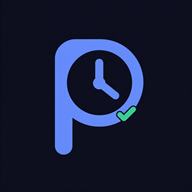

Ponto
Imp
Sentinela do seu ponto Secullum — zero extra, zero desconto.
Empresa (banco)
Tipo
Nº Folha
Identificador
Usuário
Senha
Manter conectado
login fica salvo só neste aparelho
Entrar
Ponto
Imp
—
⟳
🏠
Hoje
📋
Histórico
⚙️
Ajustes
Incluir batida —
Vai direto pro seu cartão de ponto no Secullum.
Horário
Justificativa
Confirmar e registrar
cancelar
🍽️ Almoço de hoje
Seguir o padrão
Me lembra em 15 min
Vou nesse horário
fechar
⏰
Alarme
PARAR ALARME